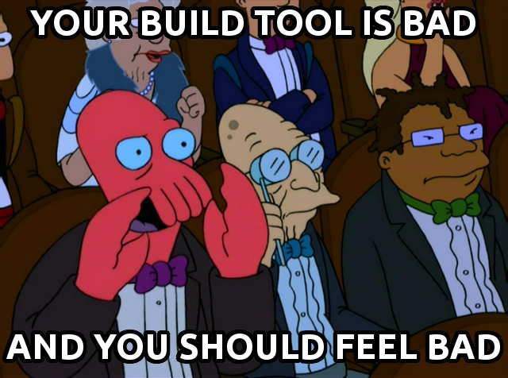

Gradle
Your Groovy build wingman
Noam Tenne
$ whoami
- Developing on the JVM for ~10 years.
- With JFrog from day 1 - prominent in majority of projects.
- All-around curious person.
Agenda
- Meet Gradle
- The glorious 1.0
- A Groovy glazing
- Enhance!
Let's roll...
Poll
$ ll /opt/tools/build
Face It!

Yeah, I said it!
Issues With Ant & Ivy
- Commonly "write-only"
- Verbose
- Ivy is in maintenance mode
Standard reaction to enterprise-scale builds:

Issues With Maven
- Opinionated
- Inflexible
- Carries architectural baggage
Standard reaction to enterprise-scale builds:

Meet Gradle
- Scalable build automation
- Dependency management
- Portable
- DAG over life-cycles/ordering
- Convention over configuration
Developer Friendly
- FOSS - ASL
- Super configurable and extensible
- Groovy-based DSL over XML
- Beyond Java and Groovy
Don't Leave Your Old Infra Behind
- Resolve and generate Maven and Ivy artifacts
- Execute Ant tasks
- Use Maven plugins
- Easily import Maven and Ant

No Client Side Configuration
- JVM configurations and arguments
- Gradle Wrapper
- Init scripts
Concise
given:
src/main/java
src/main/resources
build.gradle:
apply plugin: 'java'
GAV?
build.gradle:
apply plugin: 'java'
group = "org._10ne.project"
version = "0.0.1-SNAPSHOT"
Dependencies?
build.gradle:
apply plugin: 'java'
group = "org._10ne.project"
version = "0.0.1-SNAPSHOT"
dependencies {
compile group: 'org', name: 'module',
version: 'version'
}
The Glorious 1.0
Now it's stable
Improved IDE Support
- "idea" and "eclipse" plugins
- Intellij IDEA - Native
- NetBeans - Native
- Eclipse - Plugin
Better Dependency Management
- Away from Ivy - complete re-write
- Version conflict resolution - soon fully customizable
- Traceable resolution
New Plugins
- C++
- Code quality
- Artifact signing
- Resuming builds
Optimizations
- Daemon - now production ready
- Dependency resolution and caching
- Compilation
A Groovy Glazing
Groovy can go anywhere in your build
subprojects {
//apply plugin
//apply dependency manipulate tasks
...
}
Pretty standard...
def selectedProjects =
subprojects.findAll {
p -> //condition
}
configure(selectedProjects) {
//apply plugin
//apply dependency manipulate tasks
...
}
task taskName << {
//Do task stuff
}
gradle.taskGraph.afterTask {
task, taskState ->
def interestingTask =
(task.name =~ /\d{5}\-\d{5}/)
.matchesPartially()
if (interestingTask) {
//Do something with task
}
}
Enhance!
Let's write a plugin!Why?
- Gradle is still growing
- One size never fits all
- Re-use and share custom logic
How?
Can be written in any language - as long as the final state is byte-code.
Distribution:
- JAR file
- Within project sources
- Within build scripts
What?
A tip of the iceberg:
- Various hooks
- Intervene with existing tasks
- Create new tasks
- Customize configurations
Extension points don't do justice to the extensibility
Let's see some code
Links
-
Gradle plugins:
http://wiki.gradle.org/display/GRADLE/Plugins
-
Plugins developer guide:
http://www.gradle.org/docs/current/userguide/custom_plugins.html
-
This presentation:
https://github.com/noamt/gradle-presentation-july-2012
-
Sample project:
https://github.com/noamt/gradle-build-number-plugin
-
reveal.js:
https://github.com/hakimel/reveal.js